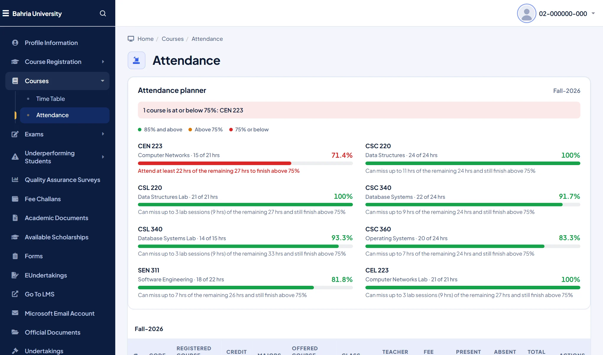

Know how many classes you can still miss
The CMS shows attendance hours, but not what they mean for the 75% rule. Campuslit adds an attendance planner: one clear row per course with a bar, your percentage, and a plain sentence such as how many hours you can still miss, or must attend, to finish above 75%.
- Counted from your credit hours and your semester length (16 weeks by default, adjustable).
- Courses at or below 75% are named at the top, so nothing sneaks up on you.
- Shown on the CMS dashboard and on the Attendance page.

It is an estimate from the hours the portal shows; the university’s own records are what count.
A Bahria time table you can actually read
The default time table is a wide grid you scroll sideways. Campuslit turns it into a clean week calendar or a day-by-day list, tells you which class is next, and remembers which view you prefer.
- Add to calendar downloads your classes as a file for Google Calendar, Apple Calendar or Outlook.
- Rooms, teachers, and theory or lab are shown on every block.

Quick search and themes on the CMS too
The CMS menu is long. Press Ctrl + K (or /) to jump to any page by typing a few letters. Pick one of six themes, or build your own, from the Campuslit toolbar button; the choice follows you across the CMS and the LMS.
Campuslit only restyles pages. Fee challans, results, undertakings and every form still work and submit exactly as before, and nothing is sent anywhere. It is an independent student project, not affiliated with Bahria University. See the privacy policy.
Questions
Is there an attendance calculator for the Bahria University CMS?
Campuslit adds an attendance planner to the CMS. For each course it shows your percentage and how many hours you can still miss, or must attend, to finish above 75%. It is a free Chrome extension and an estimate; the university’s records decide.
Can I add my Bahria time table to Google Calendar?
Yes. On the CMS time table page, Campuslit adds an Add to calendar button that downloads your classes as a calendar file you can open in Google Calendar, Apple Calendar or Outlook.
How do I make the Bahria CMS easier to use?
Install Campuslit from the Chrome Web Store and open cms.bahria.edu.pk. The dashboard, attendance and time table are redrawn, and Ctrl+K opens quick search.
Does it work on every Bahria campus and does it store my data?
It works on every campus because they share the same CMS. It sends nothing to us or anyone else (only the optional notifications read the two portals, with your own sign-in) and keeps only your look settings, optional notes and which tips you have seen, on your own device.
Try it in a minute
Add Campuslit from the Chrome Web Store, open your CMS, and sign in as usual. If you ever want the original page back, switch Campuslit off from the toolbar button.
Add to Chrome